Configurando un entorno de código abierto para procesar datos#
Instrucciones.#
Con la siguientes indicaciones podrás instalar Miniconda, Python, R y Jupyter Lab
Instalación de miniconda y python.#
Instalar Miniconda y python es una excelente opción si quieres un entorno ligero, flexible y fácil de administrar. Aquí te dejo el procedimiento paso a paso para instalarlo en windows.
Descargar Miniconda Ve al sitio oficial: https://www.anaconda.com/download/success
Elige el instalador de windows:
{kind=link}
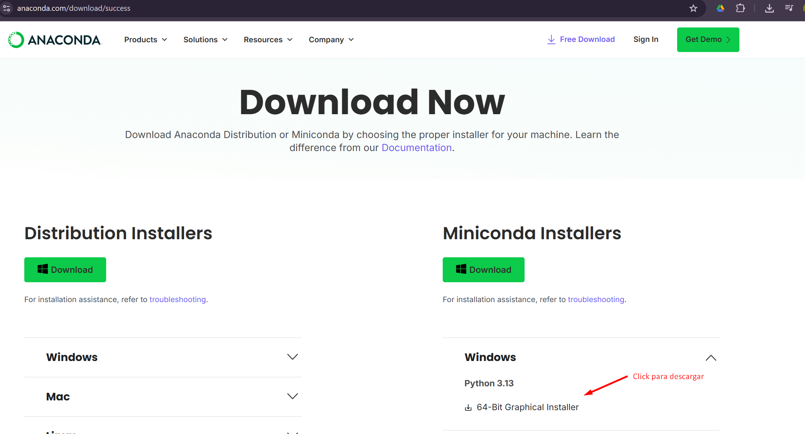
Ejecutan el archivo Miniconda3-latest-Windows-x86_64.exe aceptan los términos de licencia, utilicen las opciones (recomended) cuando deban escoger, no modifican la ubicación propuesta en la instalación y se aseguran de completar los pasos de la instalación dando finalizar.
Se dirigen a la barra de inicio en la sesión de búsqueda y escriben Anaconda prompt.
{kind=link}
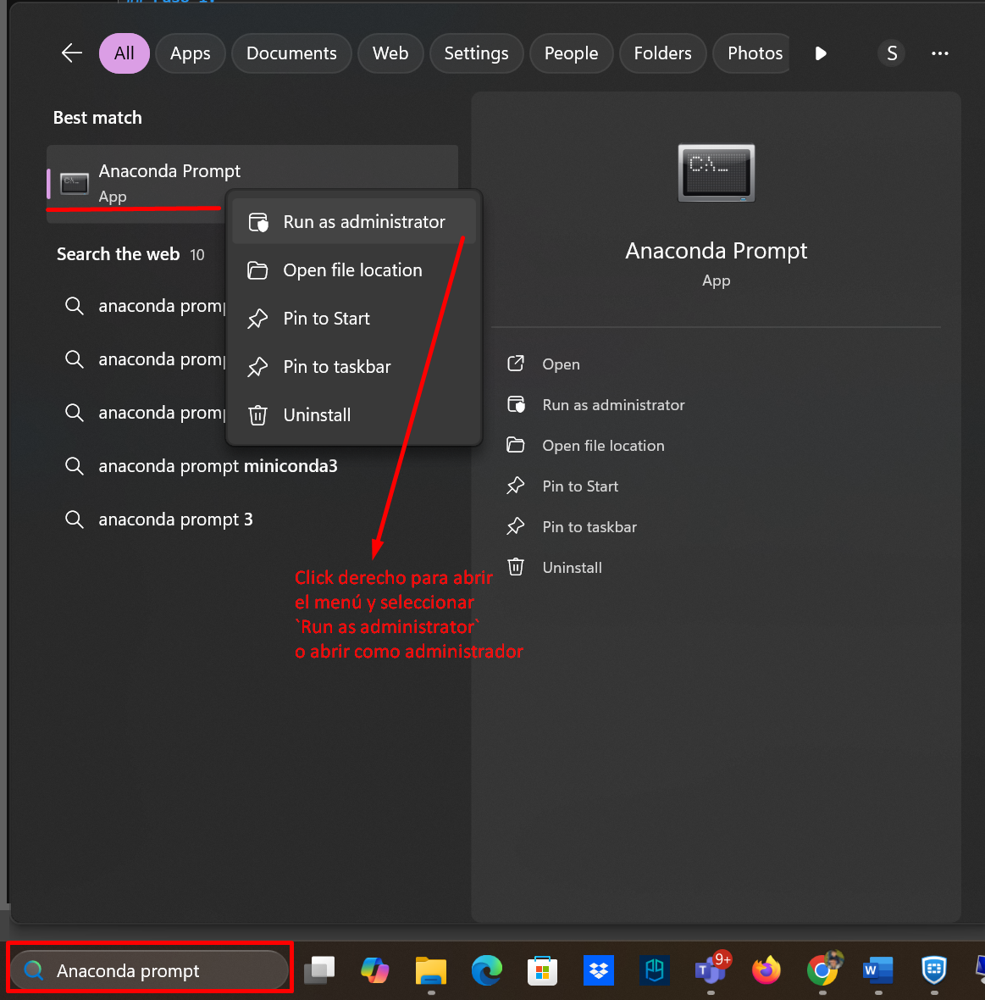
En la consola de anaconda van a seguir las instrucciones:
{kind=link}
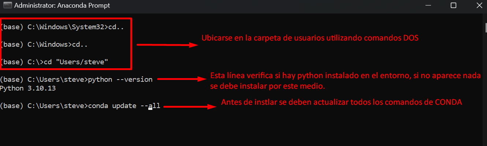
Importante
Sí observan bien, antes de cada línea de comando esta escrito
(base)esto hace referencia a un ambiente que se crea automáticamente para configurar el tipo de procesamiento que se requiera, por ejemplo: un ambiente para solo webscrapping entonces van todas las librerías relacionadas, otro para aprendizaje de máquina y dedicar solo las librerías de ese proyecto en un entorno exclusivo. Esto con el fin de aislar proyectos y que cada uno tenga sus propias versiones de paquetes, librerías y dependencias.En el entorno (base) es importante hacer las instalaciones de uso general, como actualizar el conda, instalar python e instalar jupyter lab.
En el prompt de anaconda puedes utilizar las siguientes alternativas para instalar python, la primera es restringiendo la versión 3.10 y la segunda tomará la última versión
# Instalar una versión específica de Python en el entorno base
conda install python=3.11
# O instalar la última versión disponible
conda install python
{kind=link}
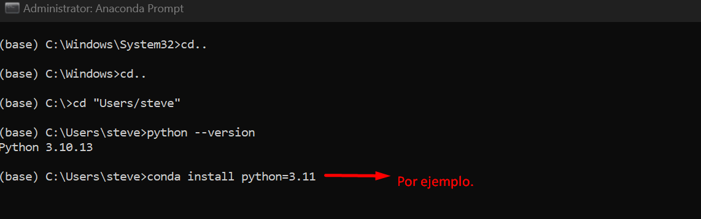
También es muy importante actualizar el pip “el gestor de paquetes oficial de python”, para aumentar las posibilidades de instalación de librerías en jupyter lab, esto se hace de la siguiente manera en el Anaconda prompt
# Actualizar en conda el pip
conda update pip
# O usando conda para reinstalar
conda install pip --force-reinstall
# Si pip está corrupto, reinstalar:
conda remove pip
conda install pip
JupyterLab es una interfaz de desarrollo interactiva y flexible para trabajar con notebooks, código, datos y documentación en un solo entorno. Es la evolución de Jupyter Notebook, diseñada para ser más potente, modular y extensible.
Para instalar el jupyter lab en el Anaconda prompt se deben ejecutar cualquiera de los siguientes comandos
# Instalar Jupyter Lab
conda install jupyterlab
# O una setencia más recomendable
conda install -c conda-forge jupyterlab
Nota:
📌 Es muy importante estar pendiente de aprobar las sugerencias que se manifiestan durante la instalación de cualquier paquete o librería, es imperativo para poder avanzar
Ahora ya pueden elegir el kernel de python cuando desplieguen el jupyter lab. para empezar a utilizar el jupyter lab deben ejecutar en Anaconda prompt la siguiente linea:
# Ejecutar la interfaz de desarrollo interactiva
jupyter lab
Finalmente se abrirá una ventana en el navegador web de su preferencia y desde ahí podrá ejecutar sus scripts.
Instalación de R en jupyter lab desde anaconda prompt#
Lo primero es crear un ambiente propio para R desde el Anaconda prompt de la siguiente manera:
# Crear un entorno en anaconda prompt en nombre_que_le_quieras_poner_al_entorno puedes ponerle Rstudio
conda create -n nombre_que_le_quieras_poner_al_entorno
Posteriormente debes activar el entorno y posteriormente hacer las instalaciones requerdidas:
# Activando el entorno creado para proceder con la instalación de R
conda activate nombre_que_le_pusiste_al_entorno
Ahora vamos a instalar R con las siguientes instrucciones:
# Instalar R base (lenguaje de programación R)
conda install -c conda-forge r-base
# Instalar paquetes esenciales de R (incluye herramientas básicas)
conda install -c conda-forge r-essentials
# Instalar el kernel de R para Jupyter
conda install -c conda-forge r-irkernel
# Registrar el kernel de R en Jupyter para que sea reconocido
R -e "IRkernel::installspec()"
Es muy importante hacer el registro del kernel de R “la última línea” por eso se debe verificar la instalación de R y los kernels disponibles en jupyter, esto se hace de la siguiente manera:
# Verificar que R está instalado
R --version
# Verificar kernels disponibles en Jupyter
jupyter kernelspec list
Ejemplo para verificar instalación y kernels disponibles
{kind=link}
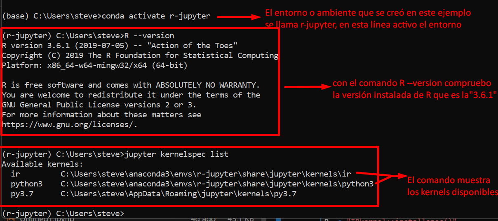
Próximos pasos recomendados:
Explora Jupyter Lab: Abre jupyter lab desde Anaconda Prompt.
Crea tu primer notebook: Prueba tanto con Python como con R.
Gestiona entornos: Usa conda create -n mi_proyecto para nuevos proyectos.
Instala paquetes: Utiliza conda install o pip install según necesites.
Recordatorios importantes:
Mantén tus herramientas actualizadas con conda update.
Usa entornos separados para diferentes proyectos.
Jupyter Lab te permite trabajar simultáneamente con Python y R.
La comunidad de estos proyectos es muy activa - ¡aprovecha los recursos online!.
Soporte continuo:
Recuerda que este ecosistema es mantenido por comunidades activas. Si encuentras algún problema, consulta la documentación oficial o los foros de cada herramienta.
Instalación de PySpark en una máquina local en sistema operativo Windows#
¡Bienvenidos, al mundo de la minería de datos!#
En esta guía, daremos el primer paso para trabajar con una de las herramientas más poderosas en el ecosistema del Big Data: PySpark.
PySpark es la biblioteca de Python que nos permite interactuar con Apache Spark, un framework de computación distribuida de código abierto diseñado para procesar grandes volúmenes de datos de manera rápida y eficiente. Mientras que Python con librerías como Pandas es excelente para datos que caben en la memoria RAM de una sola máquina, Spark nos permite distribuir el trabajo en un clúster de computadoras o ampliar la capacidad de procesamiento en memoria integrando la memoria RAM y el disco de almacenamiento de un equipo local, posibilitando el manejo del big data.
Al final de esta guía, habremos instalado y configurado PySpark en tu máquina local, creando un entorno de desarrollo perfecto para aprender los fundamentos de la minería de datos a gran escala usando jupyter lab.
Instalación y configuración#
Prerrequisitos#
Importante
A continuación se listarán los insumos necesarios para empezar la instalación y configuración de pyspark, la versión propuesta ya ha sido instalada y probada, obteniendo resultados satisfactorios.
Antes de comenzar, asegúrate de tener lo siguiente instalado en tu sistema
python.
# Verificando la instalación y versión de python
python --version
Sí no aparece instalado python, ir a la sesión anterior e instalarlo.
Java Development Kit
(JDK 8): Spark está construido sobre la máquina virtual de Java (JVM), por lo que JDK es un requisito imprescindible
# Verificando la instalación y versión del jdk de java
java -version
{kind=link}
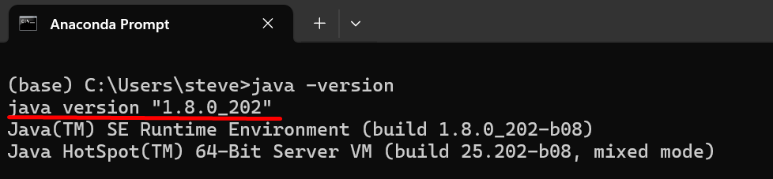
Descargar
Apache Sparkversión 3.2.4-bin-hadoop2.7Descargar
Hadoopversión 3.2.4-bin-hadoop2.7 Sí no tienes una versión delJDK instalada,Apache SparkoHadoop, en el siguiente segmento se mostrarán los pasos para la instalación.
Paso 1: Instalar el JDK si no lo tiene#
Si el comando java -version no devolvió una versión, necesitas instalarlo.
Ve al sitio web Oracle JDK. https://www.oracle.com/africa/java/technologies/javase/javase8-archive-downloads.html
Descarga la versión JDK 8 para tu sistema operativo «Windows».
{kind=link}
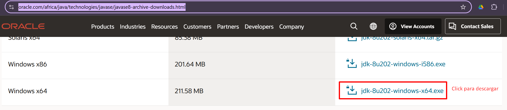
Es muy importante registrarse en la página para acceder al archivo, en cuanto de click para descargar la página los obligará a hacer un registro, importante pasar por el proceso de verificación de sus datos para poder acceder al archivo.
Ejecuta el instalador y sigue las instrucciones.
debes ubicar la carpeta de instalación en la raíz del disco que contenga la instalación del sistema operativo, comúnmente es C:
a veces hay conflicto por la ubicación que propone por defecto la instalación, por lo que se propone que se instale en la ubicación por defecto y cuando haya terminado la instalación se copie la carpetajavaen C:\Configura la variable de entorno JAVA_HOME (Es muy importante):
Windows:
Busca “Variables de entorno” en el menú de inicio.
Haz clic en “Variables de entorno.”.
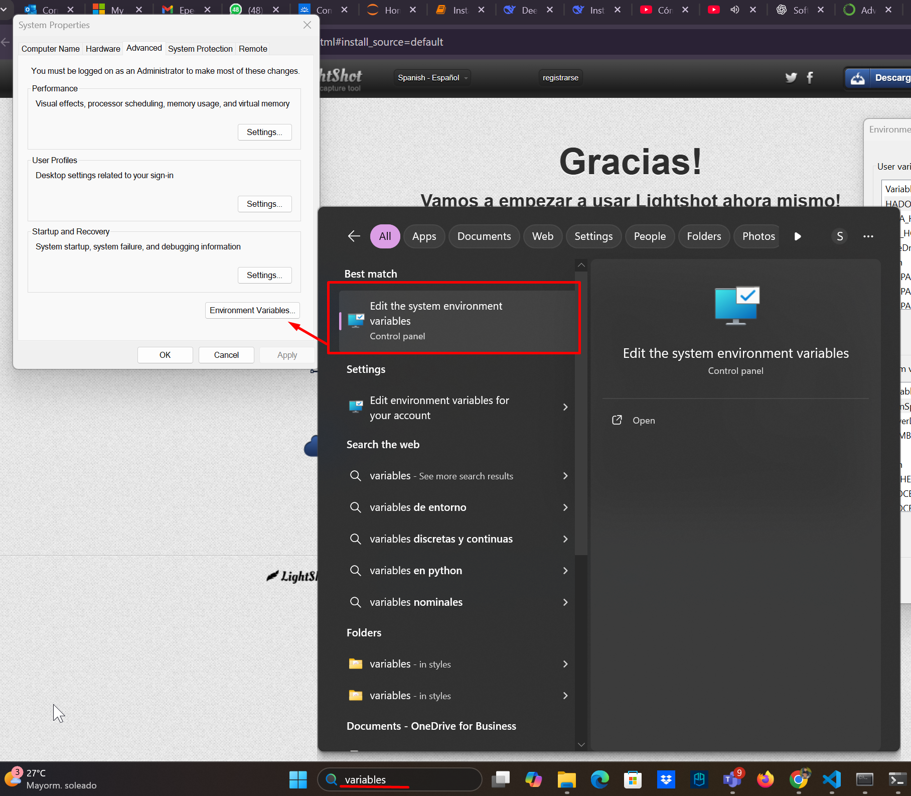
En “Variables del sistema”, haz clic en «Nueva».
Nombre de la variable: JAVA_HOME
Valor de la variable: La ruta donde instalaste el JDK (ej., C:\Java\jdk1.8.0_202) sin seleccionar la carpeta bin.
Haz clic en Ok.
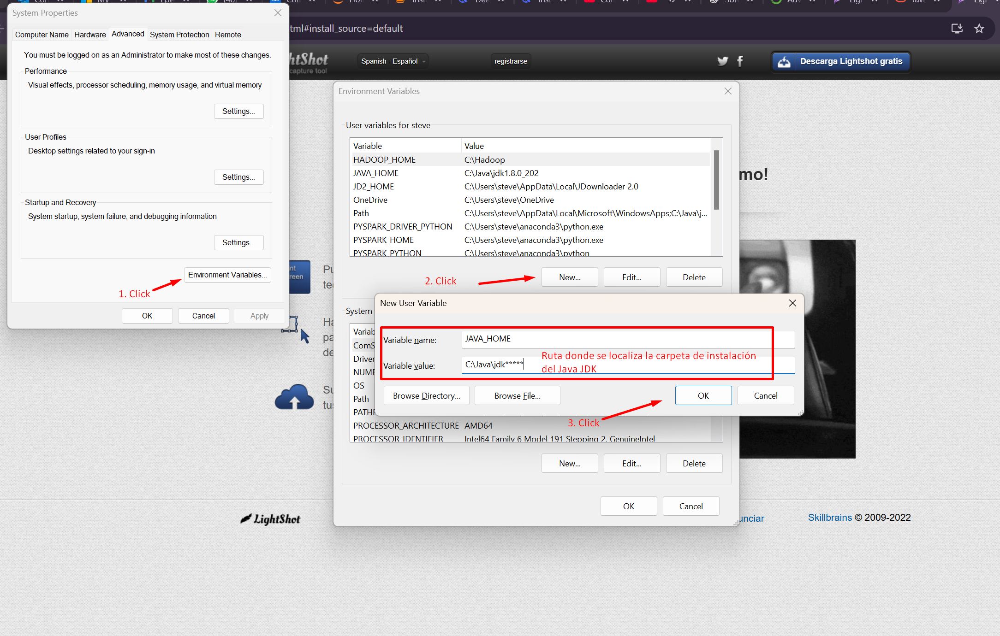
En variables del sistema ubicas «path» y haz click en editar.
en editar la variable de entorno das click en el botón «Nueva» y escribes el mismo nombre de la variable creada de esta forma %JAVA_HOME%\bin, es muy importante que especifiques la ruta final «\bin».
Haz clic en Aceptar.
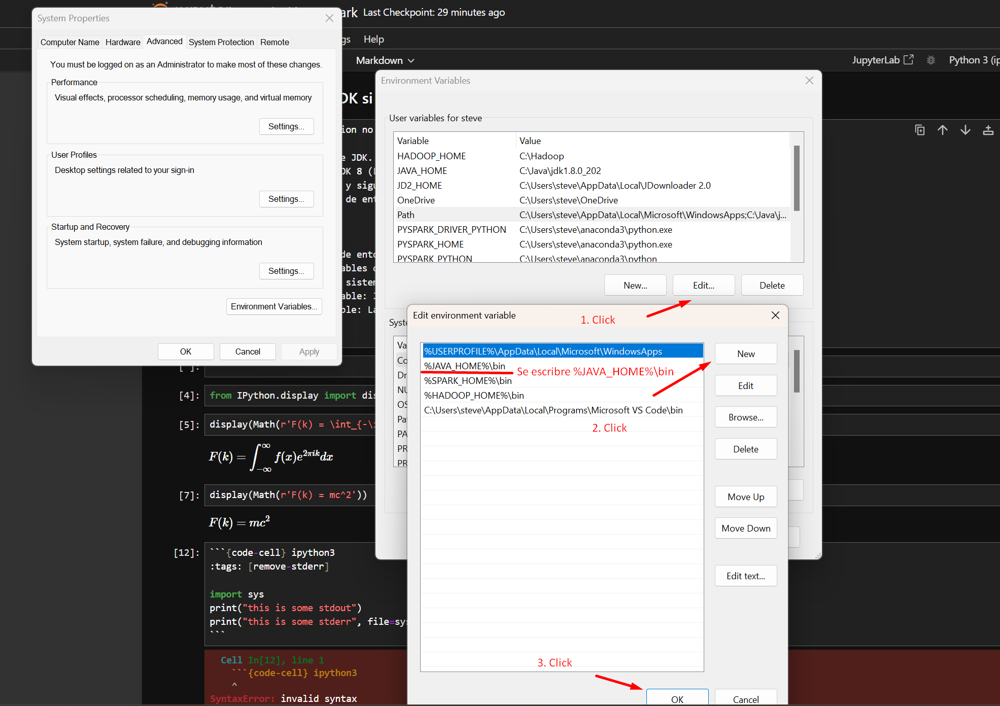
{kind=link}
{kind=link}
{kind=link}
Paso 2: Descargar el Spark y ubicarlo en C:\#
Ir al sitio https://archive.apache.org/dist/spark/spark-3.2.4/ y descargar el archivo
spark-3.2.4-bin-hadoop2.7.tgzpesa 260M
{kind=link}
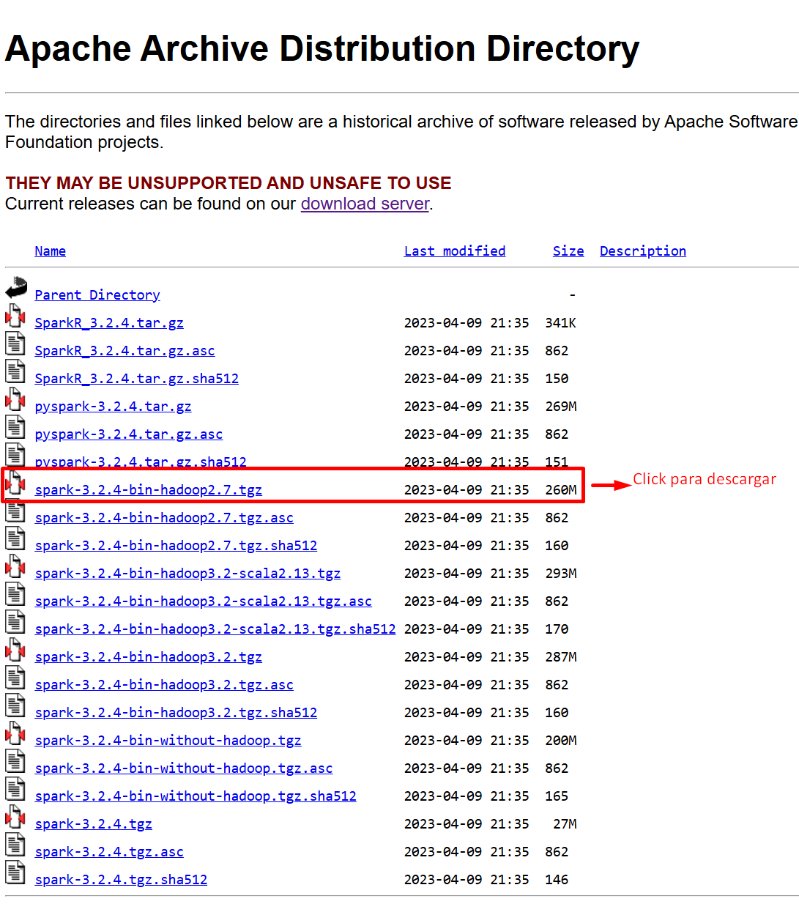
Descomprimir y ubicar la carpeta en la raiz del disco donde está instalado el sistema operativo, comúnmente es C:\
Configurar las variables de entorno para este componente, la variable se debe llamar SPARK_HOME y se deben seguir los mismos pasos que se delinearon en la configuración de la variable JAVA_HOME.
Paso 3: Descargar el Hadoop y ubicarlo en C:\ «winutils.exe»#
ir al sitio cdarlint/winutils
ubicar el archivo winutils.exe y descargarlo.
{kind=link}
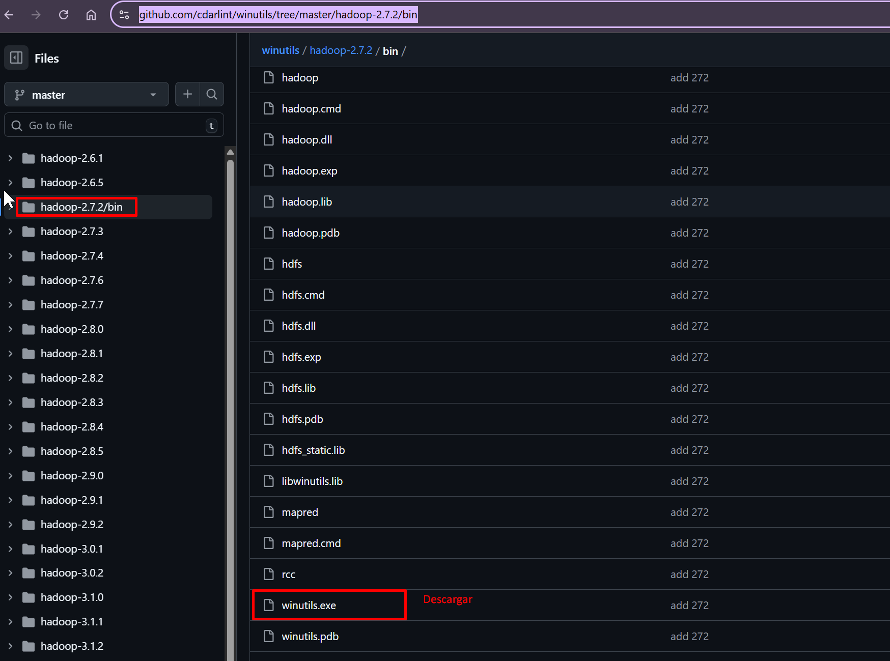
Crear una carpeta en el disco C:\ con el nombre de «Hadoop» y una vez dentro de la carpeta creamos otra con el nombre de «bin» para ubicar el archivo descargado en esta ubicación.
Se configuran las variables de entorno para este componente, la variable se debe llamar HADOOP_HOME y se deben seguir los mismos pasos que se especificaron en la configuración de la variable JAVA_HOME.
Paso 4: Instalar findspark y pyspark#
Es importante instalar findspark ya que cumple el papel de comunicarse y configurar el script automáticamente con las variables de entorno. Pyspark que cumple el papel de unir a Apache spark con python, conviriténdolo en un motor de procesamiento de datos distribuido y de alto rendimiento.
La instalación es recomendable hacerla en el Prompt de Anaconda mediante las siguientes instrucciones:
Primero es importante crear un entorno para las librerías de Spark, pueden nombrarlo Pyspark, recordemos como se hace:
# Crear un entorno en anaconda prompt con el nombre Pyspark
conda create -n Pyspark
Posteriormente debes activar el entorno creado para localizarte en él y poder hacer las instalaciones requeridas:
# Activando el entorno creado para proceder con la instalación de R
conda activate Pyspark
Segundo instalar pyspark:
# Instalar PySpark con conda
conda install pyspark
Y después instalar findspark:
# Instalar Findspark con conda
conda install findspark
Tip
O también está la posibilidad de crear el entorno Pyspark con la primera letra en mayúscula para diferenciarlo de la librería pyspark y en el mismo comando instalar pyspark y findspark y una versión de python 3.10 menor para mejorar la compatibilidad con la versión de Apache spark 3.2.6
conda create -n Pyspark pyspark findspark python=3.10 # Crea el entorno de Pyspark e instala findspark y pyspark y python 3.10
conda activate Pyspark # Activar el entorno Pyspark
jupyter lab # para ejecutar el notebook de jupyter lab
Se han listado las dos bibliotecas necesarias para que funcione Pyspark, puedes instalar las librerías que sean requeridas para trabajar otros temas.
Paso 5: Configurar en un IDE la conexión de Spark con pyspark#
Se debe abrir jupyter lab desde el Anaconda Prompt desde el entorno de Pyspark con la instrucción.
jupyter lab
Una vez escojas python como kernel ejecuta el siguiente código:
import findspark # Importa la librería para localizar Spark en el sistema
import os # Importa el módulo para interactuar con el sistema operativo
findspark.init() # Inicializa findspark para que Python encuentre Spark
import pyspark # Importa la librería principal de PySpark
from pyspark.sql import SparkSession # Importa la clase SparkSession para trabajar con DataFrames
from pyspark.sql.types import StructType, StructField, IntegerType, StringType # Importa tipos de datos
spark = SparkSession.builder.getOrCreate() # Crea o recupera una sesión de Spark existente
spark # Muestra información de la sesión de Spark activa
y sí ejecuta el siguiente resultado:
{kind=link}
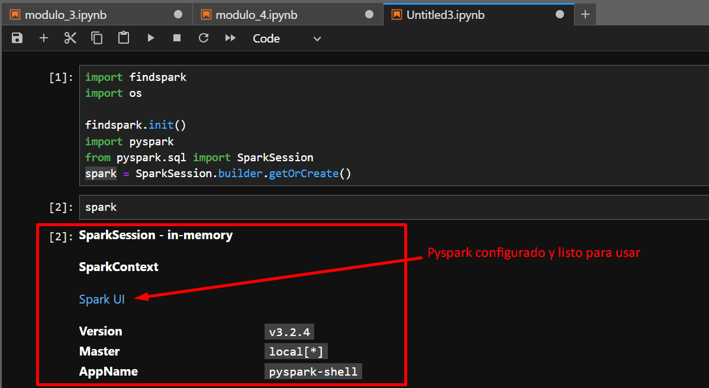
Pyspark está listo para ser probado, puede utilizar el siguiente código para hacer la prueba:
# Crear datos de ejemplo: ventas de productos
datos = [
(1, "Laptop", "Electronica", 1200, 5),
(2, "Mouse", "Electronica", 25, 15),
(3, "Teclado", "Electronica", 75, 10),
(4, "Silla", "Muebles", 350, 8),
(5, "Escritorio", "Muebles", 800, 3),
(6, "Monitor", "Electronica", 400, 7),
(7, "Lampara", "Iluminacion", 45, 12)
]
# Definir el esquema explícitamente
schema = StructType([ # Define la estructura del DataFrame
StructField("id", IntegerType(), True),
StructField("producto", StringType(), True),
StructField("categoria", StringType(), True),
StructField("precio", IntegerType(), True),
StructField("cantidad", IntegerType(), True)
])
# Crear el DataFrame con esquema explícito
df = spark.createDataFrame(datos, schema) # Crea un DataFrame con esquema definido
# Registrar el DataFrame como tabla temporal SQL
df.createOrReplaceTempView("ventas") # Crea una vista temporal llamada 'ventas'
# Ver los datos
print("=== Datos Originales ===")
spark.sql("SELECT * FROM ventas").show() # Consulta SQL básica
Si aparece el resultado después del comando show() como se ve en la siguiente imagen, es porque la compatibilidad de los componentes instalados funcionan perfectamente.
{kind=link}
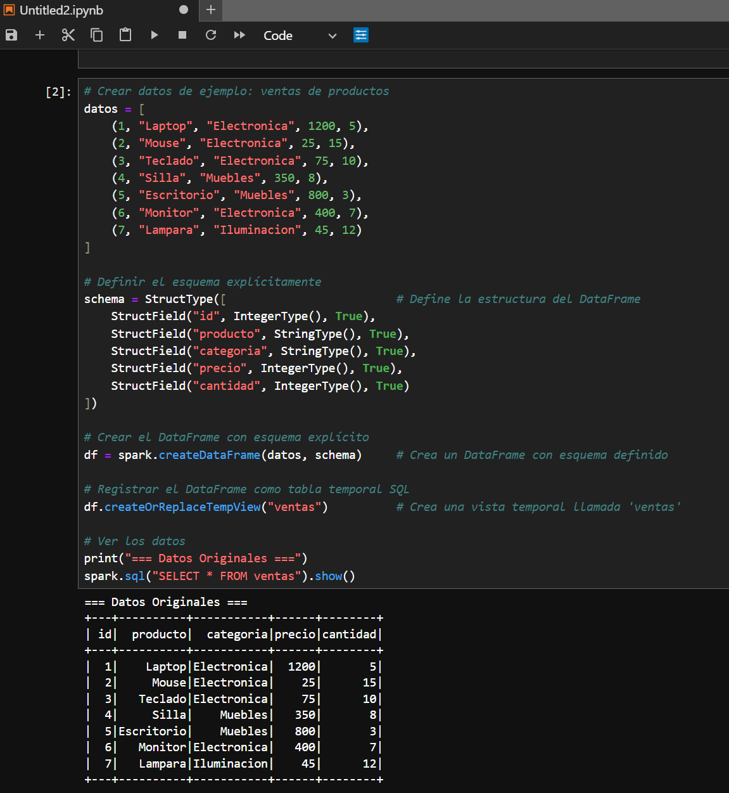
Con la instalación de Miniconda, Python y PySpark, has dado el primer paso hacia un entorno de trabajo en big data, reproducible y escalable para el análisis de datos. Este manual ha sido diseñado para guiarte con claridad y precisión, anticipando los puntos críticos que suelen generar dudas en la configuración inicial.
Recuerden que cada entorno virtual que creen será una cápsula de trabajo independiente, ideal para mantener tus proyectos organizados y tus dependencias bajo control. Esta práctica no solo mejora la estabilidad de tus desarrollos, sino que también facilita la colaboración y la documentación técnica.
Este documento forma parte de un esfuerzo continuo por hacer que la tecnología sea más accesible.
Gracias por seguir este recorrido.
Autor: Steven Cifuentes Rugeles.
Fecha: Octubre de 2025
Documentación para consultar biblioteca de pyspark: https://sparkbyexamples.com/pyspark-tutorial/